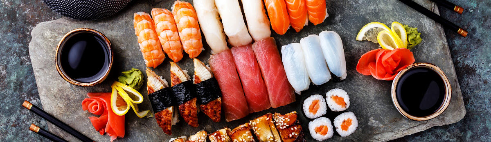

Sushi, Wagyu, Ramen
Sushi, wagyu, and ramen are the 3 foods you should eat while in Japan. They have fresh fish, marbled wagyu beef, and authentic ramen.
Here are the places you can go to get these dishes.
- Sushi - Tsukiji Fish Market offers tours. There are many vendors on the street who sell fresh fish, including fresh sea urchins!
- Wagyu - Nikuya Tanaka Ginza is a fine dining restaurant in Ginza. They serve an extremely rare type of cow called a purebred Tajima. Their menu changes every month, but their dishes are always made with the best beef.
- Ramen - Ramen Break Beats serves a soy sauce based broth with their freshly prepared noodles.